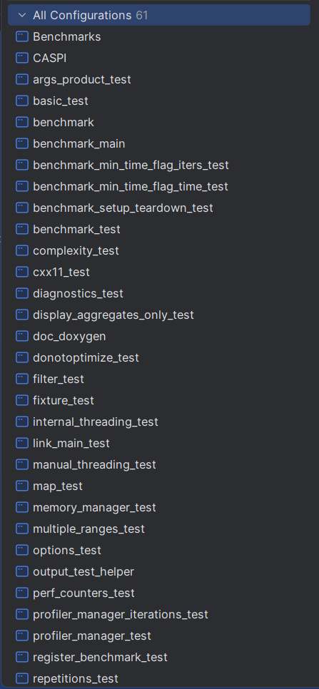

Go onto Stack Overflow and you'll see a lot of people comparing the performance of their code. Giving opinions as gospel. Comparing C to C++ to rust and even handcrafted assembly (Cough, FFMpeg). Plenty of people will opine about the virtues of their code. Compiler optimisations. Premature optimisations. It's endless. What you often won't see is actual data. I wanted to do away with those opinions and do some actual number crunching. How much do exceptions slow code down? What are the impacts of vtables & pointer chasing? And, how can you apply benchmarks to a project in the same way you would unit tests?
Linking Benchmarks to a project
I'll be using the googletest series tools for this - I already use googletest in most C++ projects. It isn't a huge leap to include another set. For this, I'll create a "Benchmarks" subproject with CMake, do the necessary FetchContent and link it against my main project.
# At top-level CMakeLists.txt:
add_subdirectory(benchmarks)
# Then in benchmarks/CMakeLists.txt:
cmake_minimum_required(VERSION 3.29)
set(CMAKE_CXX_STANDARD 20)
# Set up the benchmark project
project(Benchmarks)
message(STATUS "Configuring CASPI Benchmarks")
include(FetchContent)
# Define download location for third-party libs
set(FETCHCONTENT_BASE_DIR ${CMAKE_CURRENT_SOURCE_DIR}/libs CACHE PATH "Base directory for FetchContent downloads")
# Prevent GoogleTest from overriding your compiler/linker settings
set(gtest_force_shared_crt ON CACHE BOOL "" FORCE)
# Fetch GoogleTest
FetchContent_Declare(
google_benchmark
URL https://github.com/google/benchmark/archive/refs/heads/main.zip
DOWNLOAD_EXTRACT_TIMESTAMP TRUE
)
# Make it available
FetchContent_MakeAvailable(google_benchmark)
# --------------------------------------------------------------------------
# ADD TEST FILES HERE
set(SOURCES
base/Phase_bm.cpp
base/Denormals_bm.cpp
base/Expected_bm.cpp
)
# --------------------------------------------------------------------------
add_executable(${PROJECT_NAME} ${SOURCES})
# --------------------------------------------------------------------------
target_link_libraries(${PROJECT_NAME} PRIVATE
benchmark::benchmark
CASPI
)
Standard stuff, really. In this case, I'm "linking" against a header-only library. That simplifies things as I don't care about static or shared libs.
I can then do a build, I see that gbenchmark builds a lot of executables, which might not be all necessary:

Yeesh. This is a lot of clutter. This may just be a CLion oddity, but it's hardly pretty.